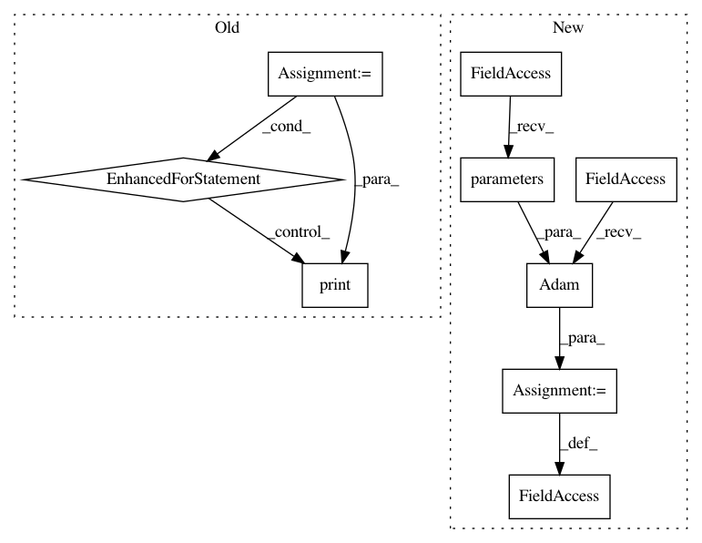

5e63df5e0b53b583b6865cc099cecd5436563113,samples/reinforce.py,,,#,13
Before Change
agent = ptan.agent.PolicyAgent(model)
exp_source = ptan.experience.ExperienceSource(env=env, agent=agent, steps_count=run.getint("defaults", "n_steps"))
for exp in exp_source:
print(exp)
pass
After Change
exp_source = ptan.experience.ExperienceSource(env=env, agent=agent, steps_count=run.getint("defaults", "n_steps"))
exp_buffer = ptan.experience.ExperienceReplayBuffer(exp_source, run.getint("exp_buffer", "size"))
optimizer = optim.Adam(model.parameters(), lr=run.getfloat("learning", "lr"))
def calc_loss(batch):
Calculate loss expression from data batch
In pattern: SUPERPATTERN
Frequency: 3
Non-data size: 9
Instances
Project Name: Shmuma/ptan
Commit Name: 5e63df5e0b53b583b6865cc099cecd5436563113
Time: 2017-06-22
Author: max.lapan@gmail.com
File Name: samples/reinforce.py
Class Name:
Method Name:
Project Name: rusty1s/pytorch_geometric
Commit Name: 04ad358395c7bd074ffb9af235ccb76d2c0dc4cc
Time: 2020-07-01
Author: matthias.fey@tu-dortmund.de
File Name: examples/pna.py
Class Name:
Method Name:
Project Name: rusty1s/pytorch_geometric
Commit Name: e2db3b3f1d3d23cd5bc1e295835e0f4b33e95447
Time: 2018-03-07
Author: matthias.fey@tu-dortmund.de
File Name: examples/cora_gcn.py
Class Name:
Method Name: